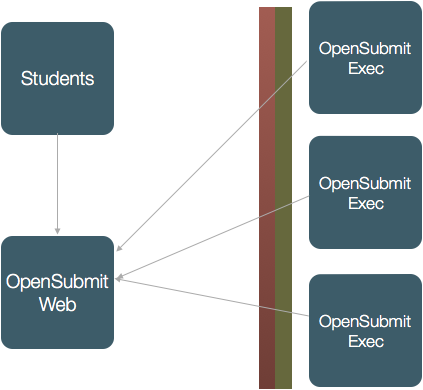

Welcome!¶
OpenSubmit is a small web application for managing assignment solutions in a university environment.
{kind=link}
Students use a trivial web page to submit their assignment solution. They are informed about their grading status by email or on the page.
Teachers and tutors use a powerful backend interface to manage assignments, deadlines, and the gradings:
 |
 |
 |
| OpenSubmit can deal with multiple courses and allows to assign teachers and tutors to them. | Submissions can be checked for plagiarism across all courses. | Submissions can be filtered, downloaded for offline correction or reset in their status. |
 |
 |
 |
| Student submission archives (ZIP / TGZ) can be previewed on the web page. | Grading is done based on custom grading schemes per course. Gradings can be delayed and commented. | The grading table gives a summary of all students and their gradings. It can be download for further processing with Excel or other tools. |
The unique capability of OpenSubmit is the testing of submissions. The most common use case is a programming assignment:
{kind=link}
A student hands in a ZIP file with source code, as solution for a particular assignment. OpenSubmit takes this upload and extracts it on a separate test machine, together with a test script provided by the teacher.
The testing can happen before (validation test) and after (full test) the assignment deadline. Results of a test before the deadline are shown to the students. This makes the life of the corrector less miserable, because all gradable solutions are ‘valid’. Students also seem to like the idea of having a tested solution, so that they do not get a bad grade due to technical difficulties on the correctors side.
When the deadline is over, the system can run another invisible full test with the student submission the determine grading-relevant information.
Other tools, such as Moodle, support not only assignments, but also the management of learning material, the sophisticated tracking of course progress and a fine-grained management of course access rights. If you want the all-inclusive solution, this is the wrong project.